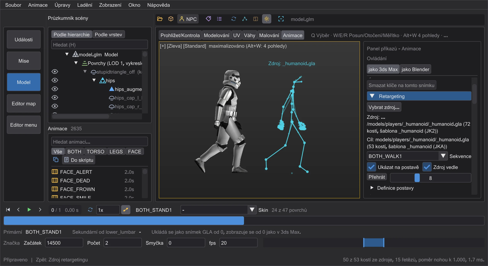
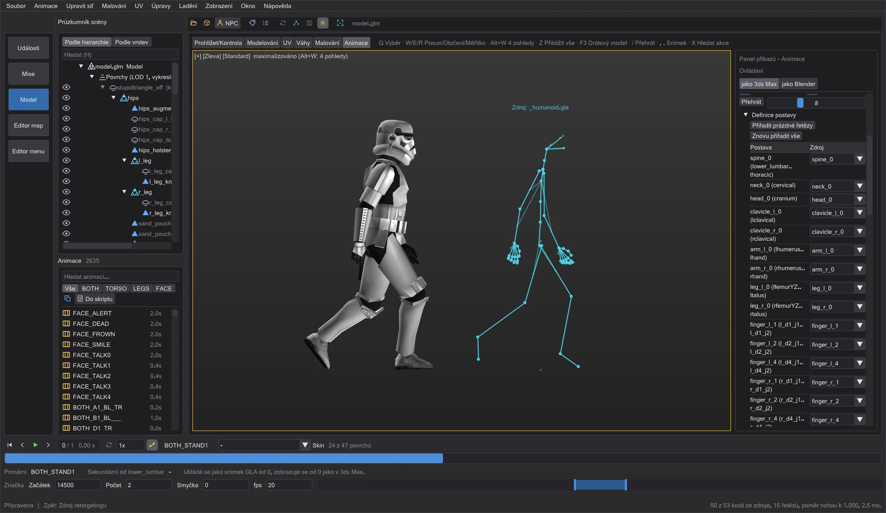
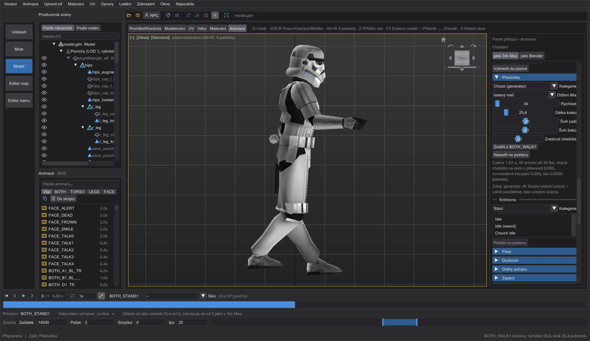

Karta Model: retargeting
Dejte postavě animaci jiné kostry - JK2 na JKA, JKA na postavu Movie Duels, lidskou chůzi na tvora nebo vlastní rig - se stejnou pózou, přiřazenými řetězy, škálovanými kroky, pevnými chodidly a výsledkem zapečeným do GLA podle volby.
Výběr zdroje#
Otevřete postavu v kartě Model a přejděte do oblasti Animation. Ve skupině Přenos (retargeting) panelu vpravo, v nabídce Animation > Retargeting, v pravém kliknutí pohledu (Control Rig > Retargeting) nebo ve vyhledávání (X, v režimu Blender F3) zvolte Vybrat zdroj: libovolné GLA z dat hry nebo soubor .gla na disku. Pak Sekvence zdroje (řádek jeho animation.cfg). Přenést ukáže výsledek hned na postavě a zdroj jako kostru vedle ní; Přehrát přehraje oba spolu. Postava ukazuje výsledek zabalený jako ve hře (compressBone): vidíte, co hra přehraje.

Řetězy a šablony rigu#
Obě kostry jsou popsány řetězy - páteř, krk, hlava, klíční kosti, paže (paže, předloktí, ruka), nohy (stehno, bérec, chodidlo, prsty), prsty ruky a přívěsky. V režimu 3ds Max se tabulka jmenuje Definice postavy (jako v MotionBuilderu), v režimu Blender Mapování kostí. Vyplní se ze šablony, když je kostra známá: JKA _humanoid (53 kostí), JK2 _humanoid (72), 34 vlastních koster základní hry (rancor, wampa, AT-ST, howler, tauntaun, protokolární droid a všechny ostatní, rozpoznané podle názvu souboru a kostí) a pro rigy z jiných programů HumanIK/Mixamo (mixamorig:...), 3ds Max Biped a CAT. Každá jiná kostra dostane řetězy navržené rozpoznáním kostí. Řetězy stejného názvu se přiřadí; jiný počet kostí se rozloží po délce řetězu, prsty podle čísla. Každý řádek můžete změnit ručně (dostane *); Přiřadit prázdné řetězy vaše řádky ponechá. Kroutící kosti (lhumerusX, lradiusX, lfemurX) přebírají svůj podíl rotace předloktí nebo stehna; prsty a tag meče, které visí pod předloktím, zůstávají u ruky. Soubory Mixamo nejsou přiloženy - stáhněte si je sami svým účtem, šablona je přiřadí.
Společná póza#
Před přenosem musí zdroj a postava stát ve stejné póze (Póza charakterizace v režimu 3ds Max, Klidová póza v režimu Blender) - jinak vyjdou paže a nohy zkroucené. Kostra JKA stojí v A-póze (paže asi 48° dolů), jiné rigy často v T-póze. T-póza a A-póza narovnají páteř a krk, paže do stran nebo 45° dolů a nohy svisle dolů, každou končetinu nejmenší rotací. Rollout ukazuje, jak moc se obě pózy ještě liší. Kost postavy doladíte tlačítky X/Y/Z ±5, dvojici uložíte pod názvem a použijete později.
Pánev, FK, IK, kořen#
Kroky běží v pořadí seznamu jako v Unrealu: Pánev pohybuje pánví jako zdroj, škálovanou k = délka nohou postavy / zdroje - delší nohy dělají delší kroky a chodidla neklouzají; FK řetězy otáčí každou kost jako její zdrojovou kost vůči společné póze, délky zůstávají vaší postavy; IK ruce/chodidla přitáhne ruce a chodidla na škálovaná místa zdroje (Reach chodidel a Reach rukou od 0 = jen FK po 1 = přesně tam, jako Reach v HumanIK); Držet dotyky chodidel drží chodidlo tam, kde došláplo, dokud chodidlo zdroje stojí; Pohyb kořene pohybuje model_root a Motion jako zdroj, škálovaně. Šipkami pořadí změníte. Ruční k dá jinou délku kroku.

Kontrola a zapečení#
Pod kroky rollout měří výsledek: klouzání chodidel je největší vodorovná dráha chodidla, zatímco stojí, v jednotkách hry, vedle stejné hodnoty zdroje (škálovaně); sloupce ji ukazují po snímcích. Skoky jsou snímky, v nichž se kost postavy otáčí nebo pohybuje o moc víc než její zdroj - klik na číslo snímek ukáže. Vykreslit do pozice (v režimu Blender Zapéct do pozice) zabalí snímky jako hra s fps z animation.cfg zdroje a položí je do pozice Pozice (BOTH_WALK1, BOTH_CIN_3 ...). V GLA a pozice pak sestavíte mapové GLA (cutscény, BOTH_CIN_1...), _humanoid.gla svého modu nebo vlastní GLA - vlastní GLA s novou kostrou načte jen hra pro jednoho hráče. Vlastní animace postavy a její zapečené GLA zůstanou po vypnutí náhledu bajt po bajtu jako předtím.
Předvolby: generátor chůze a běhu#
Skupina Předvolby (také v nabídce Animation > Předvolby a ve vyhledávání) vytváří cykly chůze a běhu naším vlastním generátorem, takže neexistuje licenční otázka: v kategoriích Chůze a Běh zvolte v seznamu Chůze (generovaná) nebo Běh (generovaný). Rychlost (NPC hry chodí rychlostí 90 a běhají 300 jednotek za sekundu) a Švih paží jsou pod seznamem; Generátor ukáže zbytek: Držení těla (normální, těžká, plíživá, zraněná, tasený meč), Délka kroku - změřenou na vlastních BOTH_WALK1 / BOTH_RUN1 postavy - a švih boků a zvednutí chodidla. Náhled na postavě hned přehraje cyklus na postavě; stojné chodidlo leží přesně na zemi a rovnoměrně klouže dozadu jako chůze hry (postavu posouvá hra), cyklus navazuje bez švu a pánev klesne tam, kde musí obě chodidla dosáhnout země. Položit na postavu (retarget) ho zapeče jako přenesenou animaci do pozice BOTH_WALK1 nebo BOTH_RUN1 (nebo jiné cílové pozice). Volné animace jiných autorů jsou ve stejném seznamu (viz Import animace).
